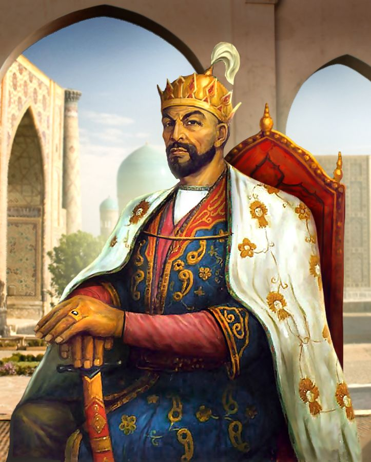

1336–1405
Amir Temur (1336–1405) — Markaziy Osiyoda yirik
va markazlashgan davlat barpo etgan buyuk davlat
arbobi va sarkarda. U Temuriylar sulolasiga asos
solgan va Samarqandni o‘z davlatining poytaxtiga aylantirgan.
👑 To‘liq ismi
Amir Temur ibn Amir Tarag‘ay ibn Amir Barqul.
📅 Tug‘ilgan sanasi
1336-yil 9-aprel
📍 Tug‘ilgan joyi
Kesh (hozirgi Shahrisabz) yaqinidagi Xo‘ja Ilg‘or qishlog‘i, Movarounnahr.

1441–1501

Alisher Navoiy (1441–1501) — buyuk shoir,
mutafakkir va davlat arbobi. Uning to‘liq
ismi Nizomiddin Mir Alisher. U chig‘atoy 4
(eski o‘zbek) tilida va fors tilida ijod
qilgan hamda turkiy adabiyot rivojiga katta
hissa qo‘shgan.
📅 Tug‘ilgan sanasi 1441-yil 9-fevral
📍 Tug‘ilgan joyi Hirot shahri.
👤 To‘liq ismi Nizomiddin Mir Alisher
✍️ Taxallusi Navoiy — turkiy tildagi asarlarida foydalangan
asosiy taxallusi. Forsiy asarlarida esa Foniy.
1394–1449
Mirzo Ulug‘bek (1394–1449) — Temuriylar
davrining buyuk astronomi, matematigi,
olimi va hukmdori. U Amir Temurning nabirasi,
Shohrux Mirzoning o‘g‘li bo‘lgan. Uning ilmiy
faoliyatining eng katta qismi astronomiya bilan
bog‘liq. 👤 To‘liq ismi
Mirzo Muhammad Tarag‘ay Ulug‘bek
📅 Tug‘ilgan sanasi 1394-yil 22-mar
📍 Tug‘ilgan joyi Sultoniya shahri — hozirgi Eron hududi.
👑 Nasabi Bobosi: Amir Temur
Otasi: Shohrux Mirzo Sulolasi: Temuriylar

1483–1530

👑 Zahiriddin Muhammad Bobur
Zahiriddin Muhammad Bobur (1483–1530)
Temuriylar sulolasining yirik vakili,
shoir, tarixchi, geograf, davlat arbobi
va sarkarda. U Hindistonda Boburiylar
sulolasiga asos solgan. 👤 To‘liq ismi
Zahiriddin Muhammad ibn Umarshayx Mirzo
📅 Tug‘ilgan sanasi 1483-yil 14-fevral
📍 Tug‘ilgan joyi Andijon, Farg‘ona vodiysi.
👨👩👦 Ota-onasi
Otasi: Umarshayx Mirzo — Farg‘ona hokimi.
Onasi: Qutlug‘ Nigorxonim — Yunusxonning qizi.